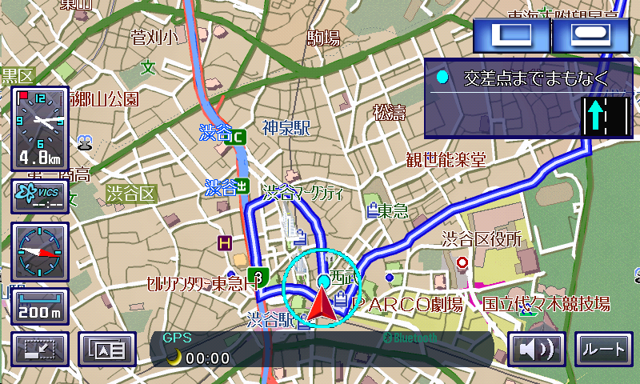
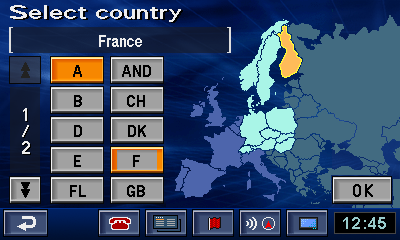
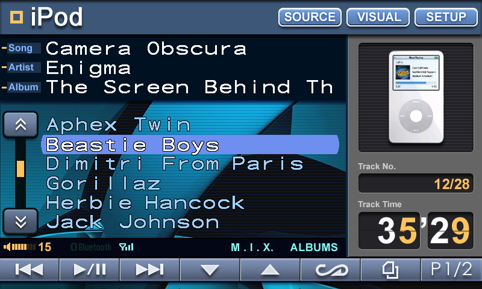
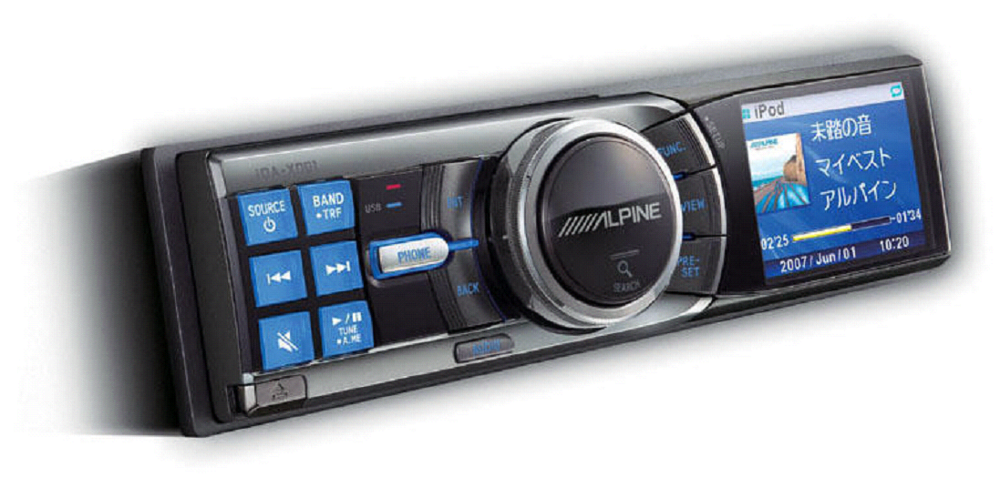
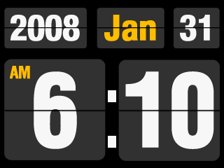
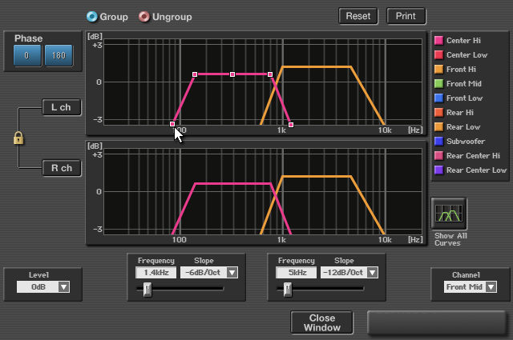

Selected Work — 03
車載 UI/UX
デザイン
カーナビゲーションシステムのUI設計から、iPod連携インターフェースの開発まで。「運転しながら使う」という制約の中で、ユーザーにとって自然な操作体験を追求した。
Context
「走りながら使う」UIの難しさ。
カーナビのUIデザインは、スマートフォン以前の時代における「複雑な情報を、限られた注意力で扱う」インターフェース設計の最前線だった。ドライバーは運転に集中しながら、目的地の設定、音楽の操作、通話の切り替えを行う必要がある。
ミスタッチが許されない環境で、いかにシンプルで直感的な操作体験を設計するか。UIデザイナーとしてのキャリアを、この問いと向き合うことからはじめた。


Design Approach
画面は小さく、タッチは粗く、目は前を見ている。
カーナビUIには明確な制約がある。画面は小さく、タッチ精度は低く、ユーザーの注意は常に分散している。この制約を「邪魔なもの」ではなく「設計の出発点」として捉えることで、本当に必要な情報だけを届けるデザインを追求した。
また、グローバルモデルの設計では、日本語・英語・ヨーロッパ各言語への対応が求められた。言語が変わっても、操作の直感性を損なわないアーキテクチャの設計は、情報設計の原点を学ぶ経験だった。
運転中の操作 / 視線の分散 / 小型画面 / タッチ精度 / 多言語対応
1タップで完結 / 階層を浅く / 重要情報を大きく / 色で状態を伝える
iPod Integration
iPodが、車の中に入ってきた。
2006年、Apple iPodとの連携機能の開発プロジェクトを担当した。iPodのライブラリをカーナビの画面から操作する——この体験を自然に設計するには、AppleのUIとアルパインのUIをどう接続するかという、インターフェースの「翻訳」が必要だった。
ユーザーがiPodで慣れ親しんだ操作感を壊さずに、車載環境の制約に適合させる。メニュー階層・アイコン・フォントサイズまで、iPodの文脈を車載画面に自然に落とし込むことを追求した。


Clock Widget
時計を、主役にする。
初めてのフルカラー液晶だった。ただし表示は1秒に3枚しか更新できず、メモリも少ない。当時のカーオーディオは、画面の中でイルカが泳いだり車が走ったりする派手な動画を流すのが流行っていたが、この制約ではそういう演出はできない。この制約の中で、何ができるか。
普段車を運転しているときのことを考えると、いつも時間を気にしていた。何時に目的地に着くか、今は何時か。車に時計が無かったり、カーオーディオやナビの時計は小さかったりして、見たいときにちゃんと見るのが難しい——それを何度も体験していた。
そこで考えたのが、昔家にあったパタパタ時計の動きを画面上で再現することだった。滅多に画面が切り替わらないし、数字の組み合わせなのでメモリも節約できる。1秒に3枚の動きで、「分」が変わる瞬間、「時」が変わる瞬間を、パタパタと十分に表現できた。画面いっぱいの時計があれば、いつでも時間を確認できる。
結果としてMac OS Xのダッシュボードウィジェットを想起させるビジュアルになり、「カーオーディオの画面がこんなにカッコよくなるのか」とユーザーの間で話題となって、人気機能のひとつになった。
派手な機能ではなく、制約の中で「いつも困っていたこと」に答える——UIデザインの面白さを実感した瞬間のひとつ。
1秒に3枚の更新。少ないメモリ。イルカも車も動かせない。
運転中いつも時間を気にしているのに、時計が小さくて見たいときに見えない。

「制約の中でシンプルにする、ではなく。制約があるからこそシンプルになれる。」
Audio UI
音を、画面で操る。
ナビゲーションだけでなく、高品位オーディオのUIも設計した。イコライザー、クロスオーバー設定、マルチチャンネル音場補正——音響のプロが使う複雑なパラメータを、一般のドライバーが直感的に調整できる画面に落とし込む仕事だった。

What I Learned
ユーザーの「文脈」を設計する。
-
01
タスクの粒度を設計する 「目的地を設定する」という行為を、何ステップに分割するかがUXの質を決める。カーナビで学んだ情報アーキテクチャの基礎は、その後の業務設計にも活きている。
-
02
グローバルで通用するUIとは何か 言語が変わっても、アイコンの意味は通じるか。色の解釈は文化で異なるか。グローバルモデルの設計を通じて、普遍的なUIの要素を探り続けた。
-
03
異なるUIを「つなぐ」設計 iPod連携では、Apple UIとアルパインUIという異なる設計思想の接続点を設計した。このインターフェース間の「翻訳」という視点は、後のDXアドバイザリー業務にも繋がっている。
Connected Projects